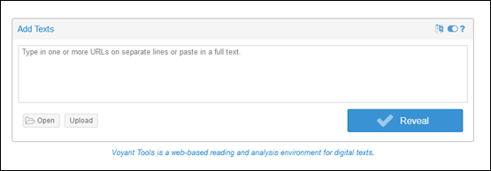
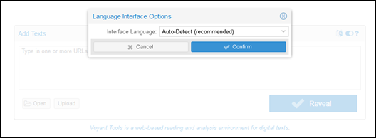
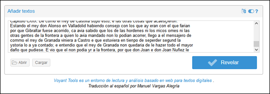
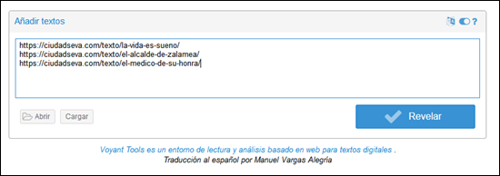

Instalación
Voyant Tools puede utilizarse directamente en línea, y también se puede instalar el servidor Voyant como una versión independiente en nuestro propio ordenador. Esto tiene varias ventajas potenciales, incluyendo un mejor rendimiento, fiabilidad, seguridad y privacidad de los datos analizados.
Antes de instalar el servidor Voyant en el ordenador, es preciso tener Java instalado y configurado en nuestro ordenador. Después hay que acceder la página con las últimas versiones de Voyant Tools y hacer clic en el archivo VoyantServer2.6.13.zip para descargar los archivos necesarios para configurar el servidor. Se trata de un archivo zip de gran tamaño, unos 200 MB, que incluye grandes modelos de datos para el procesamiento del lenguaje. Será necesario descomprimir el archivo zip antes de poder instalarlo.
En el Repositorio de Github del Servidor Voyant podemos encontrar información e instrucciones detalladas sobre la instalación del servidor Voyant. Para su correcto funcionamiento Voyant Server necesita que Java 11 esté instalado en nuestro ordenador (PC o Apple). Una vez descomprimido el archivo VoyantServer2.6.13.zip, solo es necesario hacer clic en VoyantServer.jar para ejecutar la aplicación.
En algunos casos, si el programa no se ejecuta en los ordenadores Apple, es necesario abrir la terminal, cambiar al directorio de VoyantServer,
cd VoyantServer, y escribir/Library/Java/JavaVirtualMachines/jdk-11.jdk/Contents/Home/bin/java -jar VoyantServer.jar
Para cambiar el lenguaje de la interfaz, hay que hacer clic en el botón señalado con un círculo rojo

y luego seleccionar el lenguaje en el menú desplegable

Es también posible cambiar el lenguaje de la interfaz añadiendo &lang=es al final del URL.
Cómo crear un corpus textual
Voyant Tools es un entorno de lectura y análisis de texto basado en la web que permite cargar textos en diferentes formatos—TXT, HTML, XML, PDF, RTF y MS Word—para su posterior análisis. En este tutorial utilizaramos el texto plano (.txt) que tiene tres ventajas fundamentales: no tiene ningún tipo de formato adicional, no requiere un programa especial y tampoco conocimiento extra. Para crear nuestro propio corpus en texto plano debemos seguir los siguientes pasos:
- Descargar las obras con las que queremos trabajar y extraer el texto
- Guardar el texto con Notepad++ en Windows o BBEdit en Mac, utilizando en ambos casos el formato UTF-8
- Nombrar cada uno de los ficheros evitando usar acentos y espacios en blanco, e incluyendo metadatos de contexto (i.e. fecha, autor, obra, etc.) que nos permitirán idenficarlos en Voyant Tools:
GE1_01-001.txt,1499_Celestina.txt,Clarin_unicohijo.txt, etc.
Cómo subir textos a Voyant Tools
Hay tres formas de subir textos a Voyant Tools:
- Escribiendo o pegando texto en el cuadro de texto principal (esto crea un corpus con un único documento)

- Escribiendo o pegando una o más URL en el cuadro de texto principal (una URL por línea)
- Haciendo clic en el botón
Cargardebajo del cuadro de texto para cargar archivos desde nuestro ordenador. Hay que seleccionar todos los archivos a la vez (pulsar la tecla Shift en el teclado del ordenador y hacer clic en cada elemento) o comprimir los archivos en una carpeta comprimida y cargar el archivo zip en Voyant Tools.

Ahora que hemos visto cómo acceder a las herramientas de Voyant Tools y subir textos, podemos examinar nuestro propio corpus. En este tutorial, usaremos Voyant Tools para observar las frecuencias de palabras, las colocaciones, las tendencias y las palabras clave en contexto en un corpus formado por 14 novelas del siglo XIX.
Pedro Antonio de Alarcón (Capitán veneno, El sombrero de tres picos), Leopoldo Alas (La Regenta, Su único hijo), Fernán Caballero (Clemencia, La gaviota), Benito Pérez Galdón (Doña Perfecta, Tristana), Emilia Pardo Bazán (Insolación, Los pazos de Ulloa), José María de Pereda (Peñas arriba, Sotileza) Miguel de Unamuno (Niebla, La tía Tula). Todas las obras fueron extraídas de la Biblioteca Virtual Miguel de Cervantes.
Primero, hay que descargar el fichero novelas-19.zip en el ordenador. Este archivo zip contiene nuestro corpus de muestra, 14 archivos de texto plano (txt).
Una vez conectados a Voyant Tools, hacer clic en subir y seleccionar el archivo novelas-19.zip que acabamos de guardar en el ordenador y hacer clic en Revelar. El contenido del archivo zip debería cargarse automáticamente dentro de la interfaz de Voyant Tools.